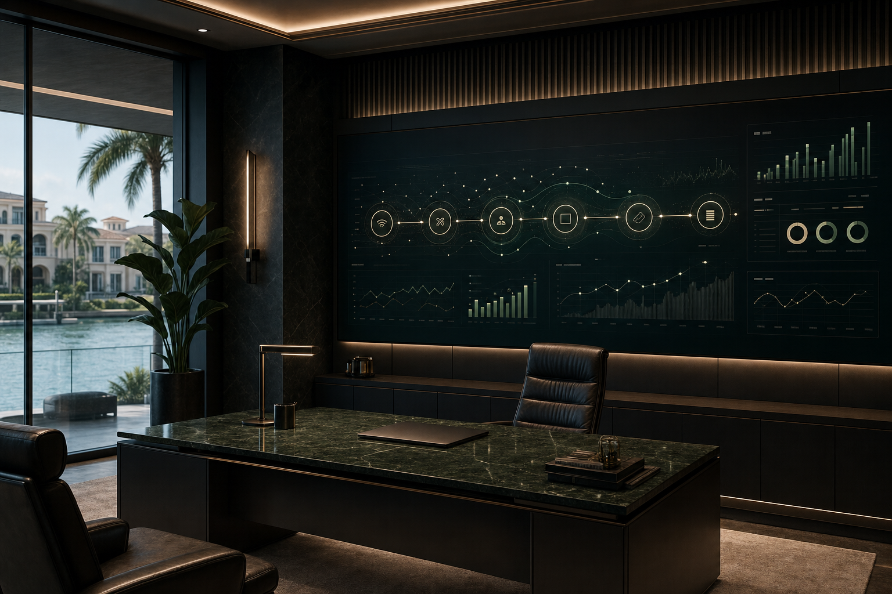
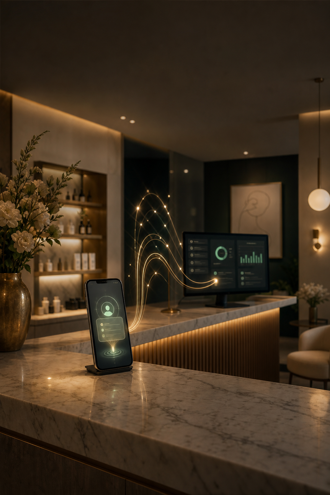

16:9 site hero / deck cover
Generated through OpenAI/Codex OAuth instead of paid OpenAI API. Source imagery stays free of final text; Stratos logo, headlines, and CTAs are deterministic HTML/CSS overlays for exact spelling and mobile-safe readability.

